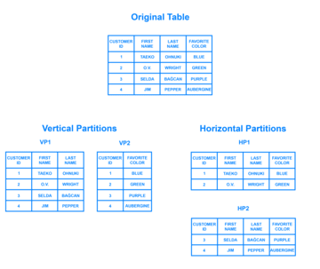
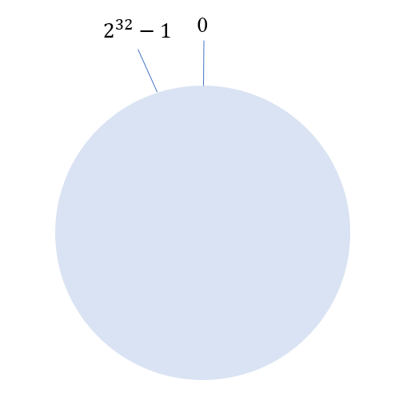
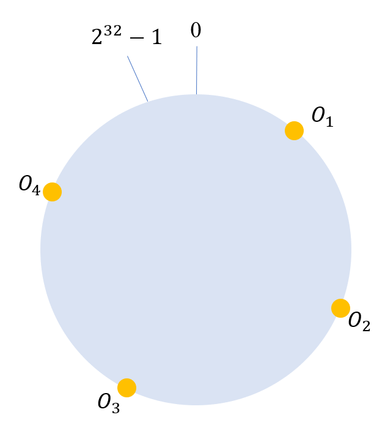
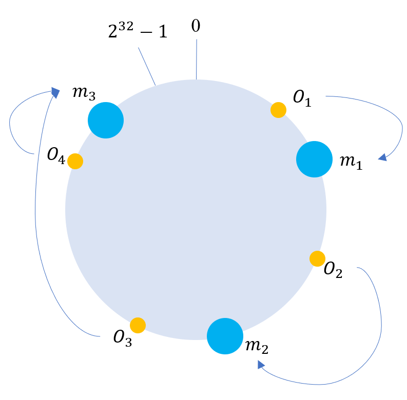

数据库分库和分表基础概念
基本概念：
名词列举:
| 名词 | 含义 |
|---|---|
| Database | 库 |
| Table | 表 |
| Sharding | 分库/分表 |
后端将数据量较大的数据表拆分到各个数据库中，拆分出的库叫做分库，分库中的表叫做分表。
1. 架构的演变:
- 最开始只用单机数据库就足够了
- 后来面对越来多的请求，开始将读操作、写操作分离，主库(Master)负责写，从库副本(Slaver Replication)负责读。从库从主库中不断同步更新数据，保持数据一致。当读请求增多时，从库可以不断地水平扩展来解决该问题。
- 然而当用户数量达到一定量级后，写请求越来越多。仅仅靠增加主库不能简单的解决问题，因为会带来数据一致性问题，数据同步会使得问题更加复杂。由此就引出了分库分表（sharding），对写操作进行切分。

2. 垂直（纵向）切分(Vertical Sharding)
2.1 垂直分库
垂直分库是根据业务的耦合性，将关联度低的不同表存储在不同的数据库。
通过按照业务将不同表分类，放在不同数据库上，而每个库又可以放在不同服务器上。其核心理念是专库专用，带来的提升是：
- 解决业务层面的耦合，业务清晰
- 能对不同业务的数据进行分级管理、维护、监控、扩展等
- 高并发场景下，垂直分库可以一定程度上提升IO、数据库连接数、降低单机硬件资源的瓶颈。
2.2 垂直分表
垂直分表则面向表中的列，将不经常用、长度较大的字段拆分到扩展表中。通过大表拆小表的方式，方便开发和维护，还能避免跨页问题。
MySQl底层是通过数据页存储的，一条记录占用空间过大会导致跨页，造成额外的性能开销。
数据库中以行为单位加载进缓存，如果每一行数据量越小，能同时加载的行数就提升，缓存命中的概率就更高，就能减少硬盘IO。将高频访问的字段放进主表也是相似的道理。
垂直分表后，如果需要同时查询主、从表中的数据，不应使用join联表查询，而应进行两次（视从表数量而定）数据查询。因为join的性能开销较大，并且联表查询时会将两行合并，导致跨页。
3. 水平（横向）切分（Horizontal Sharding）
根据业务或者字段访问频率去垂直切分的粒度有限，或者即使垂直切分了数据行数巨大也存在单库读写、存储性能瓶颈。这时需要进行水平切片。
3.1 库内分表（仅分表）
库内分表只能解决单一表数据量过大的问题，但没有将表分布到不同的库上。对MySQL来说帮助不大，所有的数据库连接请求还是竞争同一个物理机的CPU、内存和网络IO。
3.2 分库分表（既分库也分表）
将一个表的数据划分到不同节点上才能尽可能避免单个节点的瓶颈约束。
3.3 水平切分的方式：
3.3.1 根据数值范围(Range)
优点：
- 扩展性和可维护性好，每次只需要将新的数据存入到新的库中，无需对其它分片进行数据迁移。
- 单表大小可控（只要确定划分的数值范围即可）
- 使用分片的条件字段进行范围查询时，连续分片可快速定位到分片进行查询，有效避免跨分片查询的问题。
缺点：
热点数据不均匀：有的分片中对应数据被频繁访问，而有的分片数据极少被访问。例如新注册用户可能比较活跃，而10年“老兵”可能许久都未曾上线了。数据访问密度的不均衡，减弱了分库分表的作用，单个节点仍然可能成为限制整个系统的瓶颈。
3.3.2 使用取模(Mod)
优点：
数据分片相对均匀，不易出现热点数据库问题。
缺点：
- 对分片进行扩容的时候需要进行数据迁移（可以使用一致性Hash算法解决）
- 分片查询时可能增加查询难度。譬如查询数据中是否存在某一项时，需要同时查询所有分片，然后聚合，最后返回给应用，Sharding此时反而成为了累赘。
3.3.3 使用一致性Hash算法(Consistent Hashing)
事实上，这个所谓的一致性算法和Chord环有些相似
一致性hash算法：对于分布式存储，不同机器上存储了不同对象的数据，需要使用Hash函数建立从数据到服务器之间的映射关系。在物理节点数量不变的情况下，普通Hash算法就已经能胜任这个映射过程。但是一旦需要对节点进行扩容，那么会造成大量的数据迁移，导致网络通信压力突增，严重时还会导致数据库宕机。
一致性Hash算法正是为了保证当机器增加或者减少时，节点之间的数据迁移只限于两节点之间，不会造成全局的网络问题。
环形Hash空间
按照常用的Hash算法将所有key哈希到一个具有个桶的空间中，将这些数字头尾相连，形成逻辑上的闭环，如下图所示：

接着我们将数据object1，object2…对象映通过特定的Hash计算，将其映射到Hash环上，如下图所示:

假设我们有Node1、Node2…若干台机器，通过Hash算法（机器IP或者其他机器的唯一标识）得到对应环上的KEY，映射到环中，示意图如下：

如图所示，将节点也映射到环形空间中之后，我们就可以将不大于节点的数据存到对应节点中。当一个节点被删除时，由其第一后继节点接替其数据的存储；当一个节点被添加时，小于该节点且大于节点前驱节点key值的所有数据都转移到新的节点上。
优点：
扩容后最多在两个节点之间迁移数据，极大的减少了扩容时数据库迁移的负担。
存在的问题：
当集群的节点数量较少时，就可能会出现节点在环形Hash空间分布不均衡的问题。会造成Hash环的倾斜。大部分的数据只存放在少量节点上，大量节点上数据稀少。各个节点之间负载不均衡。
解决的办法在于创建虚拟节点：每个物理节点对应多个虚拟节点，这样一来一定程度上可以减少Hash环倾斜的问题。
3.3.4 使用Snowflake进行分片
待详细补充
主要思想是使用该算法生成带有时间戳信息和分片维度（数据库分片值和表分片值）
4. 数据库分片引入的问题
内容较多，待补充
4.1 分布式事务
4.2 跨节点join联表查询
4.3 跨节点聚合
4.4 节点扩容
参考资料：
1: 分库分表
3: 实战彻底搞清分库分表（垂直分库，垂直分表，水平分库，水平分表）
4: 彻底搞清分库分表（垂直分库，垂直分表，水平分库，水平分表）
6: 一致性哈希算法